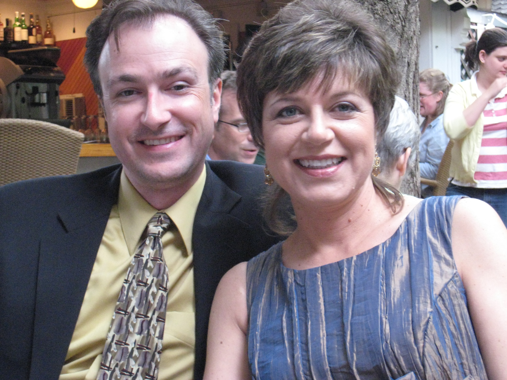
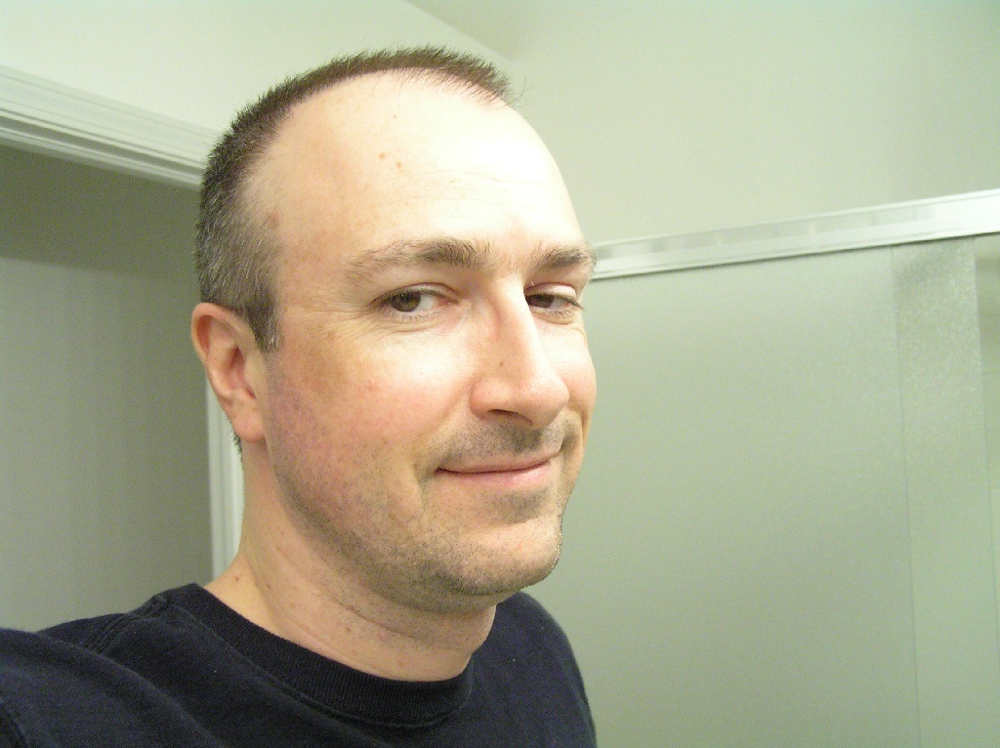

No Carol News Here
Hi all, This post does not involve Carol at all, (except for the fact that none of the following would be happening if not for Carol), but I thought I would post a little somewhat unrelated news.
Since we worked together on Fred Claus in January, Joan Philo casting has my name and casting photo. So, last week I got a call asking if I could be available for an upcoming scene in Rory's First Kiss! I have no intention or desire to become a regular background actor (I'll leave that to Carol)-- but since this is Ba-- er... Rory's First Kiss-- and I get a costume and everything-- how could I refuse?!
So, this past weekend, I went downtown for my costume fitting, and got decked out in GCPD's finest gear (turtleneck, uniform shirt, pants, boots, and hat--I wonder if we'll get guns, badges, and riot gear on the night of the shoot?) As I was leaving the fitting, some guy asks me, "What part are you?" I told him I was a policeman, and he says. "Turn around." I do so, and he says "Let me trim you up a little." OK, sure. So, I sit down, and he whips out the clippers, to "trim me up a little" (my hair, that is).

To the left is me (and Carol, sporting her RFK hairstyle and dress) before. Long story short (as my hair), I'm now sporting the "cop's haircut" (see below). I had been toying with the idea of going with a shorter style, so this is an interesting way to try it out. I have to say, I like the reduced maintenance!

My call time is this Wednesday at 10:00pm, possibly continuing Thursday night. So, I got a free haircut, and a couple of sleepless nights where I get to play a policeman! As did Carol when she worked a scene for RFK last month, I had to sign an NDA. So, I won't be able to disclose any details. No spoilers here!
Originally published on the Blogspot site
Comments (3)
Archived from the original site.
Looks good...even better than before. How about a few more pictures to confirm that the one posted isn't just a fluke. Kelli was sweet on you before, I'll have to ask her about the new dew.
Nice haircut Mark.. Looks good on you babe!!!! PS What's an HTML tag?
Police uniform huh? Are you sure that there aren't other characters in your scene that are dressed like a Construction worker, Native American Chief, Biker, Soldier and a Cowboy?